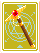
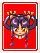

개요
환세패유기는 마작풍의 테이블 게임입니다.
~ 스토리 ~
어느날 갑자기 개최된 마작풍 테이블 게임 대회.
참가하려고 모인 것은 환세 캐릭터 여섯 명.
우승해서 유명해 지고 싶거나, 어쩌다 보니 참가해 버리거나,
목적은 저마다 다르지만 참가한 이상 무슨 일이 있어도 우승을 노린다.
우승의 영광은 누구의 머리 위에 빛날 것인가?
그리고 여섯 명을 기다리는 수수께끼의 인물은…
게임 방법
- 게임은 일대일로 승부합니다. 맨 처음 11개의 패가 주어집니다.
패를 가져오면 남기거나 버려 가면서 같은 무늬의 패를 몇 종류씩 모아 갑니다. - 역을 완성해 선언(쯔모∙론)하면 승리하며, 한 라운드가 종료됩니다. 역은 항상 12개의 패로 구성됩니다. 올린 역의 점수와 보너스 점수를 더한 만큼을 진 상대에게 데미지로 줄 수 있습니다.
- 어느 한 쪽의 HP가 0이 되면 시합이 종료됩니다.
시합은 승자 진출제로 진행되며 자신을 제외한 5인 전원에게 이기면 우승합니다. - 또한 각 캐릭터에게는 각각의 비기가 있으며, MP를 소비해 사용할 수 있습니다.
상대에게 줄 데미지를 증가시키거나, 자신의 HP를 회복하는 등, 비기를 사용해 게임을 유리하게 진행할 수 있습니다.
●기본 룰
이 대회의 룰은 마작과는 조금 다릅니다.
- 패는 캐릭터패 6종류, 무기패 3종류, 눈썹개패 4종류의 총 13종류가 있으며,
빨강·노랑·파랑의 3색으로 나뉘어 있습니다.- 단, 눈썹개패는 보라색도 있습니다.
- 각각의 패는 모두 9개씩 있습니다.
- 도라를 표시하는 패는 개수에 포함되지 않습니다.
- 1라운드는 20턴으로 종료됩니다.
- 완성된 역이 2종류 이상일 때는 점수가 높은 쪽의 역이 적용됩니다.
- 나가리가 되었을 때 어느 쪽이 텐파이일 경우 노텐의 상대에게 1000의 데미지를 줍니다.
●룰 보충
- 후리텐(날 수 있는 패를 이미 자신이 버린 경우)이라도 날 수 있습니다.
- 리치를 걸지 않으면 상대로부터 론으로 날 수 없습니다.
(즉, 기다리던 역으로 나려면 펑으로 패를 가져온 다음, 이후 쯔모를 노려야 합니다.) - 「비기」의 유무는 타이틀의 옵션에서만 설정할 수 있습니다. 게임 중의 옵션에서는 변경이 불가능합니다. 웹 버전에서는 게임 도중에도 변경할 수 있습니다.
- 1턴 째, 20턴 째에는 펑을 할 수 없습니다.
●메뉴의 표시
게임 중에 마우스 오른쪽 클릭이나 키보드의 [X]를 누르면 아래와 같은 메뉴가 표시됩니다.
캐릭터 및 비기 소개
대회에 참가하는 것은 총 6명. 캐릭터에 따라 엔딩이 달라집니다.
각 캐릭터는 2종류씩 비기를 지니고 있습니다. 사용할 수 있는 타이밍은 비기에 따라 다릅니다.
(라운드 시작 시, 라운드 도중, 라운드 종료 시 등)
화린을 제외하고는 1라운드에 1회만 사용할 수 있습니다.
용어 해설
일반 마작과 정의가 다른 경우가 있습니다. 주의하세요.
- 쯔모(ツモ)
패를 가져오는 것. - 펑(ポン)
(패를 가져오지 않고) 상대가 버린 패를 받아 3개 모음으로 만드는 것. 1턴 째와 20턴 째는 펑을 할 수 없다. 펑을 해서 나면 역의 득점이 3/4가 된다. - 리치(リ―チ)
앞으로 1개로 날 수 있을 때 리치를 선언하는 것. 한번이라도 펑을 한 이후(울었을 때)에는 리치를 걸 수 없다. 리치를 걸면 자동적으로 발생하는 비기 이외에는 조작이 불가능해진다. - 론(ロン)
리치를 걸고 있을 때, 상대가 버린 패로 나는 것. - 나가리(流局)
어느 쪽도 나지 못하고 라운드가 종료되는 것. - 텐파이(テンパイ)
앞으로 1개로 날 수 있는(역이 완성되는) 상태. - 노텐(ノ―テン)
나가리가 됐을 때 텐파이가 아닌 상태. - 도라(ドラ)
났을 때에 도라와 같은 패를 들고 있으면 보너스를 받을 수 있다. ?로 표시된 「숨김 도라」는, 리치로 난 경우에만 모양이 표시된다. - 오야코(親子):
오야는 먼저 패를 가져가는 쪽(선), 코는 나중에 가져가는 쪽. 패유기에서는 언제나 플레이어가 '오야'가 됩니다.
보너스 득점 일람
났을 때 들고 있는 패나 난 방법에 따라, 보너스 점수를 받을 수 있습니다.
역 일람
환세패유기의 역은 전부해서 30종류가 있습니다. 역의 설명은 게임 중 메뉴에서도 볼 수 있습니다. 웹 버전에선 게임 화면 바깥, 오른쪽에서 표시합니다.
●2개 역


●3개 역
- 아타호: 호격권
- 린샹: 선열각
- 페톰: 폭염의 주문
- 화린: 빙인의 주문
- 스마슈: 쾌진격
- 유리와카마루: 진공거합베기
- 빨강: 적일색
- 노랑: 황일색
- 파랑: 청일색
●4개 역
- 아타호: 맹호난무
- 린샹: 유미쌍조
- 페톰: 대폭염의 주문
- 화린: 뇌격의 주문
- 스마슈: 백인일섬
- 유리와카마루: 선풍거합베기
- 빨강: 초 적일색
- 노랑: 초 황일색
- 파랑: 초 청일색
국내에 정발된 환세희담에서는 '문어공격'으로 오역됨.
●6개 역
- 빨강: 순 적일색
- 노랑: 순 황일색
- 파랑: 순 청일색